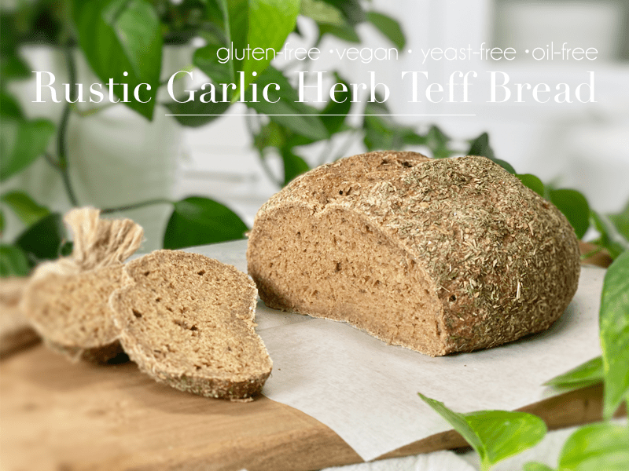
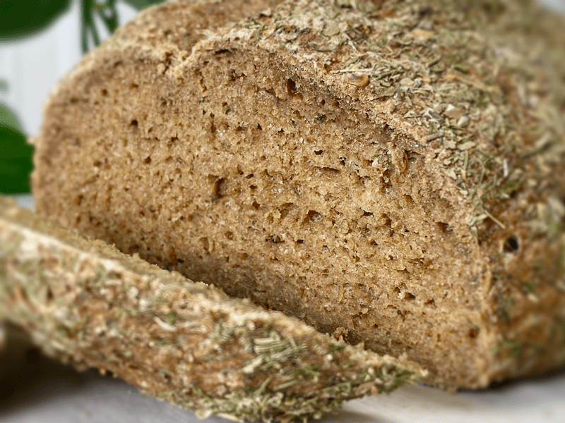
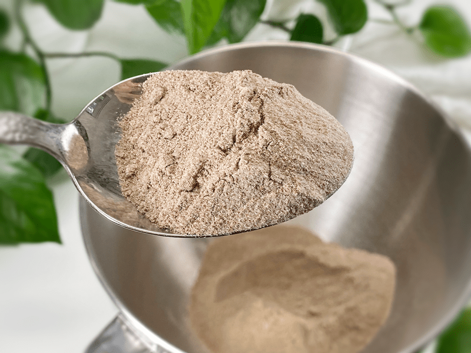

Rustic Garlic Herb Teff Bread | Baked | Gluten-Free | Vegan | Yeast-Free
No need to plug your essential oil diffuser today, because this bread is going to FILL your home with the most intoxicating herb aroma that will have your stomach growling with hunger (even if you’re not hungry — these herbs have superpowers). In many of my gluten-free bread recipes, I use sorghum flour in my flour blend. Today, I am setting it aside to use teff flour in its place. So if you want to loaf around with me in the kitchen, keep on reading…

You know, as I sit here typing this recipe up for you, what I am REALLY wanting to do is pick up that hot loaf of bread, rip it in half like some crazed cavewoman, and bury my face in it. How’s that for honesty? But no… I must restrain myself so I can share all the lovely details of how to make this bread. The sacrifices I make are real.
The Texture & Flavor of This Bread
I think one of the biggest challenges in running a recipe site is getting across what the texture and flavor are like so you know exactly what to expect when you make your own loaf in your house. I am excited to share that bread turned out absolutely lovely, which I know doesn’t really tell you anything. So let me start off by talking about the hearty, springy, and loosely dense texture that this bread has. The crust is dark and crusty, springing back when pressed upon. It won’t crumble under the weight of any sandwich fillings you toss at it. You can cut it super thin or you can slice off a nice thick chunk… either way, it delivers everything you can imagine when you think of warm, freshly baked bread.
The taste is a mouthful of herbs: dill, oregano, basil, and garlic (which isn’t an herb but a strong player in the flavor profile). I truly enjoyed this bread by the slice with nothing on it, but for lunch, I did serve it alongside a bowl of warm soup and I must say that the herb flavors complemented the soup perfectly–the perfect meal for a chilly winter day.

Teff Flour (today’s spotlight ingredient)
- Teff is a fine grain (about the size of a poppy seed) that comes in a variety of colors, from white and red to dark brown. The lighter the color, the milder the flavor. It is a gluten-free grain flour with an earthy, slightly nutty, and sweet taste.
- I used teff flour along with other types of flour because teff produces a fine flour that can be gritty when used in large amounts, depending on the recipe. It can also form a dense texture when used in larger amounts.
- Interesting fact: Teff is high in calcium, with a cup of cooked teff offering 123 mg, about the same amount of calcium as in a half-cup of cooked spinach.
- It is high in resistant starch, a type of dietary fiber that can benefit blood sugar management, weight control, and colon health.
- Substitution: Sorghum flour (use the same measurement).
Baking Tips
Steaming the Bread to Create a Crust
- Place a second baking sheet on the bottom rack of the oven while it preheats. Make sure it has sides.
- Once you place the bread on the middle rack in the oven to bake, take a glass of water, quickly pour it onto the empty hot baking sheet, and close the oven door right away. The steam created by the water and the hot pan helps this herb bread come out extra crusty.
- Do not open the oven door while it is baking, especially in the beginning when the steam from the water is doing its magic on the bread crust.
- This step is optional, but I must admit that it made for an amazing crust!
Type of Baking Pan
- No loaf pan is required for this recipe. I intended for it to be a rustic, freeform bread. Therefore, you just need a baking sheet and parchment paper.
- However, I have tested baking this bread in a bread loaf pan and it came out beautifully. See photos and tips below.
- Have fun and form the dough into any shape you want: baguette, buns, French bread style, etc.
Baking Times
- My oven is electric, so the outcome of the bread may differ if your oven is gas. If using a gas oven, I suggest baking the bread on a baking stone, which will provide consistent, even heat. Just as there is a science in how to MAKE bread, there is also a science in how to BAKE bread. I won’t go into detail, but you can read more about (here).
Tips for Making the Bread Dough
Measuring Flour
- If at all possible, weigh out the measurements of the ingredients. To measure without a scale, use a spoon to fluff up the flour within the container. Spoon the flour into the measuring cup and use a knife or other straight-edged utensil to level the flour across the measuring cup.
Bread-Making Routine
- Preheat the oven and prepare the pans being used.
- Create the psyllium gel so it has time to thicken while combining the remaining ingredients.
- Grind the oat and buckwheat flour in the blender.
- Place the mixer bowl on the weight scale and measure out all the dry ingredients. Sift or whisk well.
- Add psyllium gel and liquid sweetener.
- Knead the dough for 5 minutes ONLY. I used my Kitchen Aid mixer with the dough hook attachment.
- Shape the loaf, place it on the baking pan, and slide it into the oven.
- Add water to the empty baking pan below it and bake for 60 minutes.
Bread Baking = Speed Cleaning
So, what do you do while your bread is baking for 60 minutes? Oddly enough, these 60 minutes invigorate me and I turn it into a speed cleaning session. I am not sure why, but the second that oven door shuts, I am cleaning like a wet hen trying to get out of an ice storm! But seriously… this is a great time to get the dishes done, do some light picking up, throw that load of laundry in the wash, stop and drink water in between each activity, and when that 60-minute timer goes off… well, let’s just say that you can get a lot done in 60 minutes.
May your day be full and blessed, amie sue
 Ingredients
Ingredients
Psyllium Gel
Dough
- 1 cup (100 g) gluten-free rolled oats, ground
- 3/4 cup (100 g) teff flour (brown or ivory)
- 1/2 cup (100 g) raw hulled buckwheat, ground
- 1/4 cup (40 g) arrowroot powder
- 1 tsp (4 g) baking powder
- 1/2 tsp (3 g) baking soda
- 1 tsp (6 g) sea salt
- 2 tsp (2 g) dried rosemary or dill
- 1 tsp (1 g) dried basil
- 1 tsp (1 g) dried oregano
- 4 large (15 g) garlic cloves, minced
- 1 Tbsp (22 g) maple syrup
Preparation
Psyllium Gel
- Preheat the oven to 350 degrees (F).
- Line a second baking sheet with parchment paper, sprinkled with a little extra flour. Set aside.
- Quickly whisk the water and psyllium husks in a mixing bowl. It will instantly start to gel, which is to be expected. Set aside while you prepare the remaining ingredients, so it can thicken.
- I prefer using the WHOLE psyllium husks over the powdered version.
Dry Ingredients
- In the mixing bowl that we are going to knead the bread in, whisk together the oat flour, teff flour, buckwheat flour, arrowroot, baking soda, baking powder, salt, dill (or rosemary), oregano, and minced garlic cloves.
- If you have a sifter, use that to thoroughly incorporate all the dry ingredients. If using a sifter, add the garlic AFTER sifting, since the garlic is wet.
Mixing the Dough
- Add the psyllium gel and drizzle the maple syrup around the bowl.
- Using either a hand mixer or a free-standing mixer with dough attachments, knead for 5 minutes (set a timer on your phone) to ensure that it gets kneaded enough (don’t we all love feeling needed?).
- Start the mixer on low until the flour is folded in, then turn it up one speed. If you start off at too high a speed, the flour will jump out of the bowl.
- Shape the dough into a round or oblong shape and place it on the baking sheet.
- I coated the loaf with 2 tsp dill, 1 tsp oregano, and 1 tsp basil. I coated the top and sides only.
- Score the top of the bread with the tip of a sharp knife, going no more than 1/2″ deep. This creates the wonderful texture that you see in the photos.
- Slide the bread into the oven on the center rack and quickly pour 1-2 cups of water into the empty baking pan that you have positioned on the bottom rack. Quickly shut the door and bake for 60 minutes.
- Take the loaf out of the oven and turn it upside down. Give the bottom of the loaf a firm thump! with your thumb, like striking a drum. The bread will sound hollow when it’s done.
- When it’s done baking, slide it onto a cooling rack and wait to cut when cool.
Storage
- Once the bread has thoroughly cooled, you can wrap it. It should last up to roughly 5 days.
- Brown paper bag: This will better protect your loaf and allow for good air circulation, meaning that your crust won’t get soft. Some people claim that a sliced loaf stored cut-side down in a paper bag will stay the freshest.
- Plastic bag: If you want to avoid staling at all costs, go with a plastic bag. Make sure to get as much air out of there as possible before sealing. Your crust will soften, but your bread won’t dry out or harden prematurely. Make up for unwanted softness with toasting.
- Tea towel: Wrap the bread in a tea towel, then place it in the bread box.
- Fridge: Whether you store it in the fridge is up to you. Many people feel that bread in the fridge turns stale quicker. If you’re not going to finish a loaf in the first few days after baking it, you might want to freeze it until you’re ready to eat it.
- Freezing: Rather than freezing the loaf as a whole, preslice it and place wax or parchment paper in between each slice before sliding it into a freezer-safe container. That way you can pull out 1,2, or as many slices as you want.

If you are new to teff flour… this is what it looks like.
© AmieSue.com